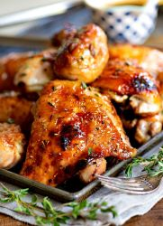

Rest Easy Recipes
Baked Honey Balsamic Chicken
Recipe Source

Ingridients
- 4 chicken thighs/ chicken breasts about 2lbs.
- Salt and pepper, to taste.
- 1/4 cup balsamic vinegar
- 1/4 cup honey
- 1/2 teaspoon garlic powder
- 1/2 teaspoon dried thyme
Conversion
Directions
- Make the sauce by combining balsamic vinegar, honey, olive oil, garlic powder and thyme then whisking until smooth.
- Season the chicken with salt and pepper to taste. Make sure to rub the seasoning in well.
- Marinate the chicken in the sauce for 30 minutes up to a few hours, or overnight.
- Arrange the marinated chicken in a or . Pour the remaining marinade on the chicken (see notes if you prefer not to cook with the marinade).
- Bake at 375° F for 35 to 40 minutes or until a meat thermometer reads 165°F.
- [For crispy skins] Broil the chicken for 2-3 minutes or until skins are golden brown and slightly charred.
- [For a thicker sauce] Strain the sauce and bring to a boil in a pot. Add a cornstarch slurry to thicken the sauce to your desired consistency and spoon over the chicken before serving.
- Let the chicken rest for 5 minutes then dish and serve hot with the sauce.
- Enjoy!
This page was created for academic purposes only